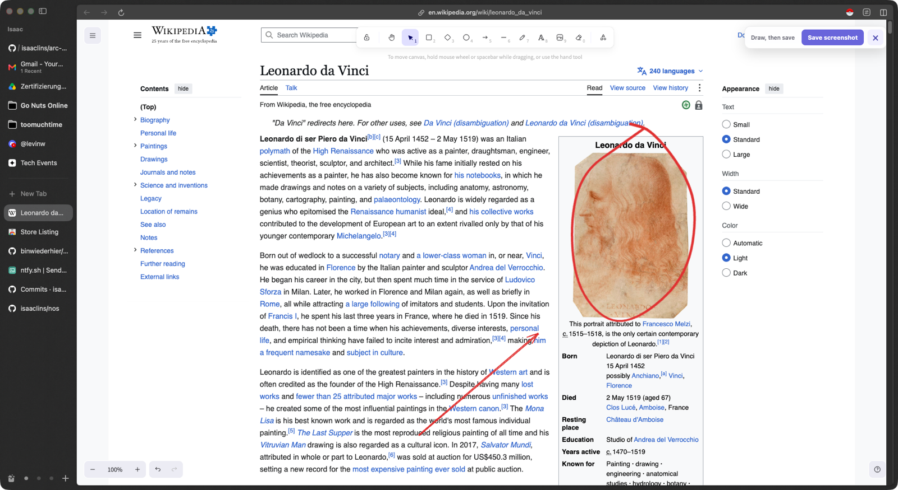

How it works
Three steps, nothing to configure.
Activate
Click the toolbar button or hit the keyboard shortcut. The page freezes underneath so videos and animations hold still while you draw.
Draw
The freehand pen starts pre-selected in red. Switch to rectangles, arrows, text, or any other Excalidraw tool whenever you like.
Save
Hit "Save screenshot". The extension hides its own controls, captures the visible tab, and drops a PNG into your downloads folder.
See it in action
Circling Leonardo on Wikipedia, because of course.

What you get
The real Excalidraw editor, not an imitation.
Every Excalidraw toolRectangle, diamond, ellipse, arrow, line, freehand, text, eraser, laser pointer, and image paste.
Frozen backdropThe page is captured at activation time, so nothing moves under your drawing.
One-click exportPage plus annotations, saved as a single PNG in your normal downloads folder.
Keyboard-firstToggle with one shortcut, close with Escape, and the page underneath is untouched.
Made for feedbackBug reports, design reviews, docs, tickets, teaching, demos: point at the actual thing.
Open sourceMIT licensed, built on the official @excalidraw/excalidraw package. Read every line.
Nothing leaves your device
No account. No server. No analytics. No tracking. The screenshot is generated inside your browser and handed straight to the browser's own download manager. The extension only runs on a tab when you explicitly activate it there, and requests no access to any website on its own.